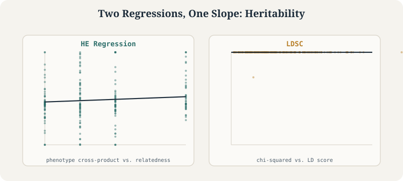

Heritability and Genetic Correlation: From First Principles to Summary Statistics
How we estimate how much of a trait is genetic, and whether two traits share genetic architecture
Statistical Genetics
Heritability
Genetic Correlation
LDSC
Tutorial
HE regression, GREML, and LDSC as the same underlying idea in two different spaces – individuals vs. markers – extended to LD score regression for genetic correlation between traits.
Author
Nivedita Bhadra
Published
July 27, 2026

The core duality this tutorial builds toward: HE regression works in the space of individuals (relatedness), LDSC works in the space of markers (LD score) – but in both, heritability is just a regression slope. These panels are plotted from the tutorial’s own simulated data.
HeritabilityLDSCGREMLR
Every quantitative genetics question eventually runs into the same two words: heritability and genetic correlation. How much of height is genetic? Do depression and obesity share genetic causes? Is a GWAS signal confounded by population structure?
Answering any of these requires estimating variance and covariance — not of the phenotype itself, but of its genetic component. This tutorial builds that machinery from the ground up: starting with individual-level methods you could run by hand on a handful of relatives, and ending with the summary-statistics methods (LD Score Regression) that power essentially every modern GWAS consortium paper.
What you’ll learn
What “heritability” actually means — and why there are three different definitions
How to estimate heritability from relatives, using Haseman-Elston regression
Why binary disease traits need special handling (the liability threshold model)
How LD Score Regression estimates heritability from GWAS summary statistics alone
What genetic correlation is, and the four different reasons two traits can share genetic architecture
The practical pitfalls that make genetic correlation estimates misleading if you’re not careful
0.1 Why Do We Need a Formal Definition of Heritability at All?
Francis Galton noticed over a century ago that relatives resemble each other more than random pairs of people, and that identical twins resemble each other more than fraternal twins. A large meta-analysis of fifty years of twin studies later put a number on this: an average heritability estimate of 49% across thousands of traits, with 69% of studies supporting a purely additive genetic model (Polderman et al., 2015).
But “heritability” turns out to be a slippery word. Before we can estimate it, we need to agree on exactly what quantity we’re estimating.
1 Part 1 — Three Definitions of Heritability
An estimand is the true underlying population parameter we’re actually trying to estimate. It sounds like a pedantic distinction, but different heritability methods target genuinely different estimands — and comparing numbers across methods without realizing this is a common source of confusion.
This asks: of the phenotypic variance in this specific sample, how much is explained by the genotypes we actually observed? It’s a property of the realized data, not an abstract population parameter.
1.2 Random-Individual Expected Variance
\[\text{Cov}(y) = \sigma_g^2 K + \sigma_e^2 I \quad (K = \text{GRM}), \qquad h^2 := \frac{\sigma_g^2}{\sigma_g^2 + \sigma_e^2}\]
Here, genetic effects are treated as random draws from a distribution, and \(K\) — the Genetic Relationship Matrix (GRM) — captures how genetically similar each pair of individuals is. This is the estimand targeted by methods like GREML/GCTA (Part 3).
Here it’s the SNP effects that are random, each drawn with variance \(\sigma_g^2/M\) (spread evenly across \(M\) SNPs). The estimand is \(\sigma_g^2\) directly. This is the estimand targeted by LD Score Regression (Part 5).
1.4 Why This Distinction Matters in Practice
GREML and LDSC are both routinely described as estimating “SNP heritability,” but they’re formally targeting different estimands under different assumptions about what’s random (individuals vs. markers). In practice they tend to agree well for polygenic traits with good data — but when they disagree, the difference isn’t necessarily a bug in one of the methods; it can reflect which estimand each one is actually built to target.
Key takeaways
“Heritability” has at least three distinct formal definitions, differing in what’s treated as random (nothing, individuals, or markers).
GREML targets the random-individual estimand; LD Score Regression targets the random-marker estimand.
Keep this in mind before treating heritability estimates from different methods as directly interchangeable.
2 Part 2 — Haseman-Elston Regression: Heritability from First Principles
Before GWAS existed, before genome-wide SNP arrays existed, geneticists were already estimating heritability — from relatives. Haseman-Elston (HE) regression, developed by J.K. Haseman and R.C. Elston in 1972, is the conceptual ancestor of nearly every method in this tutorial, including LD Score Regression itself.
2.1 The Core Premise
If a trait is influenced by genetics, relatives who are more genetically similar should have more similar phenotypes.
HE regression turns this intuition into a simple ordinary least squares (OLS) regression — no maximum likelihood, no iterative optimization, just a linear regression of phenotypic similarity on genetic similarity.
2.2 Setting Up the Model
Let \(y_i\) and \(y_j\) be the (mean-centered) phenotypes of individuals \(i\) and \(j\), so \(E[y]=0\). The basic additive model is \(y_i = g_i + e_i\), giving:
\[\text{Var}(y_i) = \sigma_g^2 + \sigma_e^2\]
Assuming no shared environment, phenotypic covariance between two relatives is driven entirely by the proportion of genome they share identical by descent, \(\pi_{i,j}\):
\[\text{Cov}(y_i, y_j) = \pi_{i,j}\,\sigma_g^2\]
2.3 Version 1 (1972): Squared Differences
Haseman and Elston’s original approach measured phenotypic similarity using the squared difference \(D_{i,j} = (y_i - y_j)^2\). Expanding and substituting the variance/covariance definitions above:
This gives a linear regression \(D_{i,j} = a + b\,\pi_{i,j} + \varepsilon\), where the intercept \(a\) estimates \(2(\sigma_g^2+\sigma_e^2)\) (twice total phenotypic variance) and the slope \(b\) estimates \(-2\sigma_g^2\). So: regress squared phenotypic differences on genetic relatedness, then divide the slope by \(-2\) to recover \(\sigma_g^2\).
2.4 Version 2 (2000): Cross-Products — Simpler and More Powerful
Elston and colleagues later proposed a cleaner alternative: use the cross-product of mean-centered phenotypes, \(C_{i,j} = y_i y_j\), instead of the squared difference.
Why is this better? Squared differences mix together the covariance (the genetic signal we actually want) with each individual’s own variance (which includes environmental noise). Cross-products isolate the covariance directly. Since \(E[y_i]=E[y_j]=0\):
so \(E[C_{i,j}] = \text{Cov}(y_i,y_j) = \pi_{i,j}\sigma_g^2\) directly. This gives an even simpler regression:
\[C_{i,j} = a + b\,\pi_{i,j} + \varepsilon\]
Now the intercept is expected to be exactly zero (assuming no shared environment), and the slope \(b\) estimates \(\sigma_g^2\) directly — no dividing by \(-2\) required.
2.5 A Simulated Illustration
# Simulate a simple additive-genetic scenario across pairs of relativesset.seed(1)n_pairs <-2000# Relatedness (pi_ij): 0.5 for siblings, 0.25 for half-sibs/grandparent, etc.pi_ij <-sample(c(0.0, 0.125, 0.25, 0.5), n_pairs, replace =TRUE,prob =c(0.25, 0.25, 0.25, 0.25))sigma_g2 <-0.4# true additive genetic variancesigma_e2 <-0.6# true environmental variance# Simulate mean-centered phenotype pairs consistent with this relatedness structurey_i <-rnorm(n_pairs, 0, sqrt(sigma_g2 + sigma_e2))noise <-rnorm(n_pairs, 0, sqrt((1- pi_ij) * sigma_g2 + sigma_e2))y_j <- pi_ij * y_i + noise # illustrative construction, not a full pedigree simulator# Cross-product HE regressionC_ij <- y_i * y_jhe_fit <-lm(C_ij ~ pi_ij)summary(he_fit) # slope should recover something in the neighborhood of sigma_g2
Call:
lm(formula = C_ij ~ pi_ij)
Residuals:
Min 1Q Median 3Q Max
-4.7523 -0.5138 -0.1174 0.3520 10.3084
Coefficients:
Estimate Std. Error t value Pr(>|t|)
(Intercept) -0.02636 0.03741 -0.705 0.481
pi_ij 1.09987 0.13514 8.139 6.93e-16 ***
---
Signif. codes: 0 ‘***’ 0.001 ‘**’ 0.01 ‘*’ 0.05 ‘.’ 0.1 ‘ ’ 1
Residual standard error: 1.089 on 1998 degrees of freedom
Multiple R-squared: 0.03209, Adjusted R-squared: 0.03161
F-statistic: 66.24 on 1 and 1998 DF, p-value: 6.93e-16
This is a simplified illustration of the logic, not a full quantitative-genetics simulator (real HE regression is normally run on GRM values estimated from genome-wide SNP data, not a handful of discrete relatedness categories) — but it captures the essential mechanic: regress phenotype cross-products on genetic relatedness, and the slope is your heritability estimate.
Key takeaways
HE regression turns “genetically-similar relatives resemble each other phenotypically” into a simple linear regression.
The original (1972) squared-difference version requires dividing the slope by \(-2\).
The revised (2000) cross-product version is both simpler and more statistically powerful, because it isolates covariance without mixing in individual-level variance.
HE regression is the conceptual foundation for LD Score Regression, covered in Part 5.
3 Part 3 — GREML, GCTA, and the Genetic Relationship Matrix
HE regression works well conceptually, but modern genome-wide SNP data calls for a slightly different formalization: GREML (Genomic REstricted Maximum Likelihood), implemented in the widely-used GCTA software (Yang et al.).
3.1 From OLS to a Mixed Model
Instead of a simple linear regression, GREML fits a random-effects mixed model:
\[\text{Cov}(y) = \sigma_g^2 K + \sigma_e^2 I\]
where \(K\) is the Genetic Relationship Matrix (GRM) — the genome-wide analog of the pairwise relatedness \(\pi_{i,j}\) from HE regression, but estimated directly from SNP genotypes rather than known pedigree relationships. This targets the random-individual expected variance estimand from Part 1: \(h^2 := \sigma_g^2/(\sigma_g^2+\sigma_e^2)\).
3.2 Building the GRM
The GRM quantifies genetic similarity between every pair of individuals in a sample, estimated from genome-wide genotype data rather than known family relationships — which is what makes it applicable to unrelated individuals in large cohorts like biobanks, not just close relatives.
Person A
Person B
Person C
A
1.00
0.10
0.02
B
0.10
1.00
0.08
C
0.02
0.08
1.00
The diagonal (self-relatedness) is close to 1; off-diagonal entries reflect how much genome-wide genetic material each pair shares. The core logic is the same intuition as HE regression: if genetics influences the trait, individuals who are more genetically similar (higher GRM entries) should be more phenotypically similar too — GREML just estimates this via restricted maximum likelihood rather than OLS, over a full genome-wide GRM rather than a handful of relatedness categories.
3.3 Why GREML Matters
GREML/GCTA was one of the methods that first demonstrated “missing heritability” could be recovered using genome-wide SNP data on unrelated individuals — showing that much of the heritability twin studies had estimated really was captured by common SNPs, just not by the small number of genome-wide-significant hits any single GWAS had found. This distinction between “heritability captured by genome-wide-significant SNPs” and “heritability captured by all measured SNPs” (the latter usually much larger) remains one of the central themes of statistical genetics.
Key takeaways
GREML uses a genome-wide Genetic Relationship Matrix (GRM) in a random-effects mixed model, estimated via restricted maximum likelihood.
It targets the random-individual expected variance estimand: \(h^2 = \sigma_g^2/(\sigma_g^2+\sigma_e^2)\).
GREML requires individual-level genotype data, unlike the summary-statistics methods covered later in this tutorial.
4 Part 4 — Binary Traits: The Liability Threshold Model and PCGC
Everything in Parts 2–3 assumed a continuous, normally-distributed phenotype. Most disease traits, though, are binary: case or control. This creates a real problem for naive heritability estimation.
4.1 The Ascertainment Problem
Case-control GWAS deliberately oversample cases. A disease might have a true population prevalence \(K\) of 1%, but researchers typically recruit a sample that’s 50% cases — otherwise there wouldn’t be enough cases to have any statistical power at all.
If you plug 0/1 case-control status directly into HE regression, you get a heritability estimate on the observed scale (\(h^2_{obs}\)). Because of the deliberate oversampling, this number is heavily biased and not biologically meaningful — it reflects your sampling design as much as the underlying genetics.
4.2 The Liability Threshold Model
The standard fix: assume the binary trait is driven by an unobserved, continuous, normally-distributed liability.
Everyone has a liability score, whether or not they’re a case.
If your liability crosses a threshold \(t\), you become a case (\(y=1\)).
The threshold \(t\) is set by the population prevalence \(K\) — rarer diseases have a higher threshold.
The quantity we actually want isn’t the heritability of the observed 0/1 scale — it’s the heritability of the underlying continuous liability scale, \(h^2_{liability}\).
4.3 PCGC: Fixing the Regression Directly
Golan et al. (2014) developed PCGC (“Phenotype Correlation–Genotype Correlation”) to solve this within the HE cross-product framework directly, rather than computing \(h^2_{obs}\) and applying an after-the-fact correction (which turns out to be mathematically unreliable under severe ascertainment).
Let \(z\) be the height of the standard normal density at the liability threshold \(t\), \(P\) the case proportion in the ascertained sample, and \(K\) the true population prevalence. PCGC shows that the expected phenotypic covariance in an ascertained sample is:
The fix is elegant: scale the observed cross-products \(y_iy_j\) by this prevalence-derived constant before regressing on the GRM (\(\pi_{i,j}\)), exactly as in ordinary HE regression. The result is a clean, directly-interpretable estimate of liability-scale heritability.
4.4 Why This Matters in Practice
Comparing raw observed-scale \(h^2\) estimates across two case-control studies of the same disease — say, one with 30% cases and one with 50% cases — is comparing apples to oranges, since the observed-scale number depends on the ascertainment ratio, not just the underlying biology. Always convert to the liability scale before comparing heritability estimates across binary-trait studies, especially ones with different sampling designs or disease prevalence assumptions.
Key takeaways
Case-control ascertainment biases naive (observed-scale) heritability estimates for binary traits.
The liability threshold model reframes disease as an unobserved continuous trait crossing a threshold set by population prevalence.
PCGC folds the correction directly into the HE cross-product regression, using a prevalence-based scaling factor, rather than a flawed post-hoc transformation.
Liability-scale \(h^2\), not observed-scale \(h^2\), is the number that’s comparable across studies with different ascertainment.
5 Part 5 — LD Score Regression: Heritability from Summary Statistics Alone
Everything so far — HE regression, GREML, PCGC — requires individual-level genotype data: actual genotypes for actual people. But most large GWAS consortia only release summary statistics: one effect size, standard error, and p-value per SNP, with no individual-level data at all (for privacy and logistical reasons). LD Score Regression (LDSC), introduced by Bulik-Sullivan, Finucane, and colleagues in 2015, estimates heritability from summary statistics alone — no individual genotypes required.
5.1 The Intuition: LD Amplifies Detectable Association
Recall that SNPs correlated with a causal variant through linkage disequilibrium pick up some of that variant’s association signal — this is the same LD logic that underlies GWAS itself and PRS construction. The LDSC insight extends this one step further:
A SNP that tags (is correlated with) more of the genome should show a larger marginal association signal on average — simply because it’s more likely to be picking up signal from a nearby causal variant.
5.2 From Fisher’s Polygenic Model to an Estimating Equation
Assume a polygenic model (Fisher, 1918): \(y_i = \sum_j \beta_j X_{ij} + \varepsilon_i\), with \(\beta_j \sim [0,\ h^2/M]\) — effect sizes drawn with variance spread evenly across \(M\) SNPs. From GWAS, we observe marginal effect estimates \(\hat\beta_j = \frac{1}{N}\sum_i X_{ij}y_i\). Taking the expectation of \(N\hat\beta_j^2\) and working through the algebra:
\[E[\chi_j^2] = \frac{Nh^2}{M}\,\ell_j + Na + 1\]
where \(\ell_j = \sum_k r_{j,k}^2\) is the LD score of SNP \(j\) — the sum of its squared correlations with every other SNP in the reference panel. This is a simple linear regression: regress each SNP’s GWAS \(\chi^2\) statistic against its LD score.
Slope\(\propto Nh^2/M\) → estimates SNP heritability \(h^2\).
Intercept\(\propto Na + 1\) → captures confounding, including population stratification. This is exactly what LD score regression was originally designed to detect: true polygenic signal should scale with LD, but confounding inflation (like population stratification) inflates test statistics roughly uniformly regardless of LD — so it shows up in the intercept, not the slope.
Worked example from the original literature: a schizophrenia GWAS (Psychiatric Genomics Consortium) showed \(\lambda_{GC} = 1.48\) (substantial genomic inflation) but an LDSC intercept of only 1.06 — meaning the overwhelming majority of that inflation was consistent with genuine polygenic architecture, not confounding. This kind of decomposition is one of LDSC’s most valuable practical contributions: separating “real polygenicity” from “something’s wrong with your GWAS.”
5.3 A Simulated Illustration
# Illustrative LDSC-style simulationset.seed(42)M <-5000# number of SNPsN <-50000# GWAS sample sizeh2_true <-0.3# true heritabilitya_true <-0.01# confounding/stratification inflation# Simulate LD scores (in reality, computed from a reference panel like 1000 Genomes)ld_score <-rgamma(M, shape =2, scale =20)# Simulate chi-squared statistics under the LDSC expectation, plus noiseexpected_chisq <- (N * h2_true / M) * ld_score + N * a_true +1chisq_obs <-rgamma(M, shape =2, rate =2/ expected_chisq) # noisy draws around expectationldsc_fit <-lm(chisq_obs ~ ld_score)summary(ldsc_fit)# Recovering h2 and the intercept from the fitted slope/interceptslope_hat <-coef(ldsc_fit)[["ld_score"]]intercept_hat <-coef(ldsc_fit)[["(Intercept)"]]h2_hat <- slope_hat * M / Ncat("Estimated h2:", round(h2_hat, 3), "\n")cat("Estimated intercept (stratification proxy):", round(intercept_hat, 3), "\n")
Call:
lm(formula = chisq_obs ~ ld_score)
Residuals:
Min 1Q Median 3Q Max
-907.6 -318.0 -97.4 198.9 4064.4
Coefficients:
Estimate Std. Error t value Pr(>|t|)
(Intercept) 486.5597 11.0465 44.05 <2e-16 ***
ld_score 3.4683 0.2255 15.38 <2e-16 ***
---
Signif. codes: 0 ‘***’ 0.001 ‘**’ 0.01 ‘*’ 0.05 ‘.’ 0.1 ‘ ’ 1
Residual standard error: 452.4 on 4998 degrees of freedom
Multiple R-squared: 0.04519, Adjusted R-squared: 0.045
F-statistic: 236.6 on 1 and 4998 DF, p-value: < 2.2e-16
The point of this simulation isn’t the exact numbers — it’s the mechanic: regress \(\chi^2\) statistics on LD scores, and the slope (rescaled by \(M/N\)) is your heritability estimate.
5.4 The Duality Between HE Regression and LDSC
These two methods are more closely related than they might look:
HE regression (sample space)
LDSC (marker space)
Matrix
\(XX^T\) → \(N\times N\) (GRM: relatedness between people)
\(X^TX\) → \(M\times M\) (LD matrix: correlation between SNPs)
Regress
phenotype cross-products on the GRM
GWAS \(\chi^2\) statistics on LD scores
Underlying question
Do genetically-similar people have similar phenotypes?
Do SNPs that tag more of the genome show bigger effects?
By the rules of linear algebra, these two spaces contain the same total information about genetic variance — they’re dual views of the same underlying question. But summarizing the full \(M\times M\) LD matrix down to one number per SNP (\(\ell_j\)) throws away the specific shape of how SNPs correlate with each other — information the full GRM in HE regression preserves. This is exactly why HE regression, using individual-level data, is statistically more powerful than LDSC using summary statistics alone. LDSC trades some statistical power for the enormous practical advantage of not needing individual-level genotypes.
Key takeaways
LDSC estimates heritability from GWAS summary statistics alone, by regressing each SNP’s \(\chi^2\) statistic on its LD score.
The slope of this regression estimates heritability; the intercept estimates confounding/stratification inflation — letting you decompose genomic inflation into “real polygenicity” vs. “something’s wrong.”
LDSC and HE regression are dual views of the same underlying variance information — marker-space vs. sample-space — with HE regression retaining more statistical power at the cost of requiring individual-level data.
6 Part 6 — Relaxing LDSC’s Assumptions
Standard LDSC is a method-of-moments estimator — it needs only \(E[\beta_j]=0\) and \(\text{Var}(\beta_j)=\sigma_g^2/M\), with no strict distributional (Gaussian) assumption on effect sizes. But it does assume something stronger than it first appears: a uniform genetic architecture, where every SNP is expected to explain exactly the same amount of phenotypic variance, regardless of its LD, minor allele frequency, or biological function.
6.1 Where the Uniformity Assumption Actually Hides
It’s not just the \(\sigma_g^2/M\) term — it’s baked into how the genotype matrix \(X\) is defined. LDSC standardizes genotypes:
where \(g_{i,j}\) is the raw allele count and \(p_j\) is the minor allele frequency. Standardizing forces every SNP’s column to have variance exactly 1, so \(\text{Var}(X_j\beta_j) = \sigma_g^2/M\) for every SNP regardless of its frequency. The consequence: dividing by \(\sqrt{2p_j(1-p_j)}\) inflates the allelic-scale effect-size variance of rare variants specifically.
This wasn’t an oversight — the LDSC authors were fully aware of it, and chose it deliberately for two reasons: (1) it makes \(X^TX\) a clean correlation matrix, simplifying the algebra considerably; (2) it’s empirically defensible, since effect-size variance genuinely does tend to increase as allele frequency decreases, consistent with negative selection acting more strongly against common large-effect variants.
6.2 Relaxing the Frequency Assumption: The α Parameter
Is the standard uniformity assumption the right fit for every trait? Not necessarily. We can generalize it with a parameter \(\alpha\):
Variance independent of MAF — common and rare variants explain equal expected variance
\(0\)
Effect size (not variance) independent of MAF — common variants explain more overall variance
\(< -1\)
Strong negative selection — rare variants dominate the variance
Introducing \(\alpha\) changes the LD score itself into a weighted version, \(\ell_j(\alpha) = \sum_k r_{j,k}^2\,[p_k(1-p_k)]^{1+\alpha}\), which then plugs into the same regression machinery as before.
How is α estimated? Via profile likelihood: define a grid of candidate \(\alpha\) values, compute the expected GWAS \(\chi^2\) statistics under each, compare to the actual observed statistics, and pick the \(\alpha\) that maximizes model likelihood. Empirically, across many complex traits the true \(\alpha\) tends to fall between \(-0.25\) and \(-0.5\) — suggesting the default \(\alpha=-1\) may somewhat overestimate the contribution of rare variants for many traits.
6.3 Relaxing the LD Assumption: LDAK and SumHer
A different critique: if ten SNPs sit in near-perfect LD, they likely all tag the same underlying causal variant — but standard LDSC gives each of them full weight, effectively inflating that region’s apparent contribution. LDAK (Speed & Balding) introduces an LD-based weight \(w_j\) per SNP — SNPs in dense LD regions get down-weighted, SNPs in low-LD regions (more independent signal) get up-weighted: \(\text{Var}(\beta_j) \propto w_j\).
6.4 Relaxing the Functional Assumption: Stratified LDSC (s-LDSC)
A third critique: a SNP sitting inside an active promoter or coding region is plausibly more likely to be causal than one in an intergenic “desert” — biology isn’t uniform across the genome. Stratified LD Score Regression (Finucane et al., 2015) partitions the variance across \(C\) overlapping functional annotation categories instead of assuming one genome-wide \(\sigma_g^2\):
where \(a_{jc}=1\) if SNP \(j\) belongs to annotation category \(c\) (0 otherwise), and \(\tau_c\) is the per-SNP heritability contribution of category \(c\). The regression itself generalizes to a multiple regression: \(E[N\hat\beta_j^2] = N\sum_C \tau_C\,\ell(j,C) + Na + 1\), where \(\ell(j,C) = \sum_{k\in C} r_{j,k}^2\) measures how much of category \(C\) is tagged by SNP \(j\).
The widely-used “baseline model” is simply a specific choice of about 24 core functional annotations (plus flanking windows around them) used as the default category set.
What can you do with this? Two useful quantities fall out directly: the heritability of category \(C\) itself, \(h^2(C) = \sum_{j\in C}\beta_j^2\), and whether category \(C\) is “punching above its weight” — comparing \(h^2(C)/h^2\) to \(|C|\) (the category’s share of the genome). If a category explains disproportionately more heritability than its size would predict, that’s heritability enrichment — a signal that the category is biologically important, and a concept that carries forward directly into methods like SBayesRC (Part 8).
6.5 All Four Approaches, Side by Side
Every method below is really the same method-of-moments regression machinery, applied under a different assumption about \(\text{Var}(\beta_j)\):
Method
Variance assumption
Standard LDSC
Uniform: \(\sigma_g^2/M\)
SumHer / LDAK
Scaled by LD weights \(w_j\) (and optionally MAF via α)
α-modeled LDSC
Scaled by MAF: \([p_j(1-p_j)]^{1+\alpha}\)
s-LDSC
Sum of functional-annotation contributions: \(\sum_c a_{jc}\tau_c\)
The statistical framework stays fixed; what changes is the biological model of genetic architecture baked into the variance assumption.
6.6 A Brief Aside: Non-Additive (Dominance) Heritability
Everything so far assumes purely additive genetic effects. Dominance variance (\(\sigma_d^2\)) captures whether the heterozygote genotype deviates from the exact midpoint of the two homozygotes. Modeling this requires an orthogonal encoding of additive and dominance genotype codes (achievable under Hardy-Weinberg equilibrium), which then permits two independent LD score regressions — one additive, one dominance — since dominance LD decays at the square of additive LD (much faster with physical distance).
Applied across roughly 1,100 traits in UK Biobank, dominance heritability turned out to be small — typically under 5% of total genetic variance, and often statistically indistinguishable from zero. This doesn’t mean dominance never matters biologically at individual loci — but at the population-variance level, additive effects absorb most of what a two-degree-of-freedom model can explain. The standard additive-only GWAS assumption holds up well for most complex traits.
Key takeaways
Standard LDSC’s “uniform architecture” assumption is baked into genotype standardization, and can be relaxed in several directions.
The α parameter relaxes the MAF assumption; LDAK/SumHer relax the LD-density assumption; stratified LDSC (s-LDSC) relaxes the functional/annotation assumption.
All of these remain method-of-moments regressions — only the assumed variance structure of SNP effects changes.
Non-additive (dominance) heritability is generally small for complex traits, validating the standard additive GWAS model.
7 Part 7 — Genetic Correlation: Do Two Traits Share Genetic Architecture?
Everything so far has focused on a single trait. But one of the most common questions in statistical genetics involves two traits: do depression and obesity share genetic causes? Are psychiatric disorders genetically related to each other? Does elevated cholesterol share genetic architecture with heart disease? Answering these requires genetic correlation.
7.1 Motivation
The goal is to determine the shared genetics of two traits — schematically, whether the genetic effects underlying Trait A and Trait B overlap. This matters for two main reasons: uncovering causal pathways (e.g. cholesterol → heart disease) and informing categorization of related conditions (e.g. clustering psychiatric disorders by shared genetic architecture rather than by symptom overlap alone).
7.2 Four Reasons Two Traits Can Be Genetically Correlated
A single variant or gene influencing multiple traits is called pleiotropy, and it comes in several distinct flavors — each with a different biological and causal interpretation:
Vertical pleiotropy (\(G \to x \to y\)): the variant affects trait \(x\), which in turn causally affects trait \(y\). The genetic correlation here reflects a genuine causal chain.
Horizontal pleiotropy (\(G \to x\) and \(G \to y\), independently): the same variant affects both traits through separate biological pathways, with no causal link between \(x\) and \(y\) themselves.
Pleiotropy via an intermediate phenotype (\(G \to z \to x\) and \(z \to y\)): an “endophenotype” \(z\) mediates the shared effect — for example, latent factors underlying clusters of psychiatric disorders (Grotzinger et al., 2025).
Spurious pleiotropy (via LD): two distinct causal variants, \(G_1 \to x\) and \(G_2 \to y\), happen to sit in LD with each other (or with a shared marker). This looks like pleiotropy in the data but reflects two independent causal mechanisms that are simply co-inherited — an artifact of genome structure, not shared biology.
Mendelian Randomization can distinguish vertical from horizontal pleiotropy — this is exactly the tool genetic correlation itself cannot provide, since \(r_g\) only tells you whether shared genetic architecture exists, not its direction or mechanism.
7.3 From Variance/Covariance/Correlation to Heritability/Genetic Covariance/Genetic Correlation
The mathematical structure of genetic correlation is a direct analogy to ordinary variance and covariance:
So the whole problem of estimating genetic correlation reduces to estimating heritability (variance) and genetic covariance (covariance) — as the saying goes, all you really need is covariance.
7.4 Cross-Trait LD Score Regression
Cross-trait LDSC extends the single-trait \(\chi^2\)-on-LD-score regression from Part 5 to a product of Z-scores across two GWAS:
where \(z_{1j}, z_{2j}\) are Z-scores for the two traits at SNP \(j\); \(N_1, N_2\) are the two GWAS sample sizes; \(\rho_g\) is genetic covariance; \(M\) is the number of reference SNPs; \(\ell_j\) is the LD score; \(\rho\) is the phenotypic correlation between the traits; and \(N_s\) is the number of individuals overlapping between the two studies.
The slope of this regression estimates genetic covariance \(\rho_g\) (which is then rescaled into the correlation \(r_g\)); the intercept absorbs any phenotypic correlation induced by sample overlap between the two GWAS.
Single-trait LDSC is a special case of this equation. Set trait 1 = trait 2 (so \(N_1=N_2=N\), \(\rho=1\), complete overlap), and the cross-trait equation reduces exactly to the standard single-trait form from Part 5, \(E[\chi_j^2] = \frac{Nh^2}{M}\ell_j + 1\). Genetic correlation and heritability estimation are, mathematically, the same regression viewed from two different angles.
Robustness to sample overlap. A reassuring property: cross-trait LDSC remains fairly robust even when the two GWAS share participants (\(N_s > 0\)). Overlap tends to inflate the intercept roughly uniformly across variants, rather than biasing the slope — meaning the \(r_g\) estimate itself stays comparatively reliable even in the presence of sample overlap, unlike many other cross-trait methods.
Call:
lm(formula = z1z2_obs ~ ld_score)
Residuals:
Min 1Q Median 3Q Max
-6.4236 -1.3460 -0.0022 1.3030 6.7866
Coefficients:
Estimate Std. Error t value Pr(>|t|)
(Intercept) 0.052421 0.049026 1.069 0.285
ld_score 2.398684 0.001003 2391.175 <2e-16 ***
---
Signif. codes: 0 ‘***’ 0.001 ‘**’ 0.01 ‘*’ 0.05 ‘.’ 0.1 ‘ ’ 1
Residual standard error: 1.984 on 4998 degrees of freedom
Multiple R-squared: 0.9991, Adjusted R-squared: 0.9991
F-statistic: 5.718e+06 on 1 and 4998 DF, p-value: < 2.2e-16
Estimated genetic covariance: 0.3
Exactly as with single-trait LDSC, the mechanic is what matters: regress the product of Z-scores across two traits on LD score, and the slope gives genetic covariance.
Key takeaways
Genetic correlation asks whether two traits share genetic architecture — quantified as \(r_g\), the correlation of their genetic components.
Pleiotropy underlying genetic correlation comes in several distinct flavors: vertical, horizontal, mediated by an intermediate phenotype, or spurious (via LD) — each implies a different biological story.
Cross-trait LDSC extends single-trait LDSC to a product-of-Z-scores regression; single-trait LDSC is the special case where a trait is compared against itself.
Genetic correlation, unlike Mendelian Randomization, cannot on its own distinguish why two traits are correlated — only whether they are.
8 Part 8 — Interpreting Genetic Correlation, and Its Limitations
Having a formula for \(r_g\) is only half the job — interpreting it correctly, and knowing when to distrust it, matters just as much.
8.1 Reading the Sign and Magnitude
\(r_g\) ranges conceptually from \(-1\) to \(+1\):
Positive\(r_g\): genetic effects on the two traits point in the same direction.
Negative\(r_g\): genetic effects point in opposite directions.
Zero\(r_g\): either the genetic effects are essentially uncorrelated genome-wide, or positive and negative local genetic correlations are canceling out across the genome. This second possibility is worth remembering — a genome-wide \(r_g\) near zero doesn’t rule out strong correlation concentrated in specific regions (this is what dedicated local genetic correlation methods, like LAVA or SUPERGNOVA, are built to detect).
Real examples from the literature (Bulik-Sullivan, Finucane et al., 2015): positive genetic correlations cluster among metabolic disorders, lipid/heart-disease traits, growth-related traits, and psychiatric disorders; negative correlations appear between HDL cholesterol and other metabolic/cardiovascular traits, and between years of education and risk factors like smoking, BMI, and LDL cholesterol.
One more practical note: cross-trait LDSC generally has wider standard errors than either individual-level methods or single-trait LDSC’s own heritability estimates — a noisy-looking \(r_g\) estimate isn’t necessarily a red flag on its own, it may just reflect the inherently lower precision of the cross-trait regression.
8.2 Four Limitations to Keep in Mind
1. Traits must be sufficiently heritable. If a trait’s own heritability is too low, the genetic correlation regression can mechanically produce \(|r_g| > 1\) — a nonsensical value that nonetheless falls directly out of the math when the underlying signal-to-noise ratio is too poor. As a practical rule of thumb, treat \(\rho_g\) estimates involving any trait whose heritability Z-score is below 4 as too noisy to trust.
2. The method assumes polygenicity. LDSC-based genetic correlation works best for traits with many small-effect causal variants spread across the genome. It’s less reliable for traits dominated by a handful of large-effect loci, since the underlying regression logic depends on polygenic averaging across many SNPs.
3. Reverse causation can masquerade as genetic correlation. A positive genetic correlation between obesity and depression, for instance, is equally consistent with obesity causally influencing depression risk, or depression causally influencing obesity risk (Speed et al., 2019). Genetic correlation is symmetric and directionless by construction — it cannot tell you which way, if either, causality runs. That question requires Mendelian Randomization, not \(r_g\).
4. Assortative mating can inflate estimates. If people non-randomly choose partners who resemble them on a given trait (assortative mating, with correlation \(\rho_m > 0\) between mates), the equilibrium genetic correlation exceeds the “true” underlying genetic correlation: \(\rho_{g,\text{eq}} > \rho_g\) whenever \(\rho_m > 0\) (and \(\rho_{g,\text{eq}} = \rho_g\) only when there’s no assortative mating, \(\rho_m = 0\)). This is a subtle confound worth remembering specifically for traits known to be assortatively mated on — height and educational attainment are classic examples.
8.3 Extension: Genomic SEM
Once you can estimate genetic correlations pairwise between many traits, a natural next step is to model the structure of that correlation across all of them simultaneously. Genomic SEM (Grotzinger et al., 2019) is exactly this — a two-step framework:
Estimate the full genetic covariance matrix \(S\) across many traits, using pairwise cross-trait LDSC.
Decompose that covariance matrix into latent genetic factors — structural equation modeling (see our companion SEM tutorial) applied to a genetic covariance matrix, rather than a raw phenotypic one.
This is precisely how researchers have identified shared latent genetic factors underlying clusters of psychiatric disorders (Grotzinger et al., 2025) — the same factor =~ indicator measurement-model logic from classical SEM, just with the genetic covariance matrix standing in for the raw phenotypic covariance matrix.
Key takeaways
Interpret \(r_g\)’s sign as the direction of shared genetic effects, but remember a near-zero genome-wide estimate can still mask strong local correlation.
Genetic correlation requires reasonably heritable, polygenic traits to be reliable, and is symmetric — it cannot establish which trait causes the other (that’s Mendelian Randomization’s job).
Assortative mating is a distinct, easy-to-overlook confound that can inflate \(r_g\) estimates above their “true” value.
Genomic SEM extends pairwise genetic correlation into a full structural model across many traits at once, using the same measurement-model logic as ordinary SEM.
9 Part 9 — Practical Checklist, and Where This Leads Next
9.1 Before You Trust an LDSC Heritability or Genetic Correlation Estimate
A short, practical checklist worth running through before reporting or relying on any LDSC-based result:
Ancestry-matched LD reference. LD scores must come from a reference panel matching the GWAS population’s genetic ancestry — the same ancestry-matching concern that recurs throughout fine-mapping and PRS.
Sufficient sample size. LDSC gets noisy at low \(N\) — a common rule of thumb is \(N > 3{,}000\) for standard LDSC and \(N > 5{,}000\) for stratified LDSC.
Sufficient polygenicity. The method works poorly if very few SNPs actually affect the trait; watch out for a small number of unusually large-effect variants distorting the regression.
Liability-scale conversion for binary traits. Never compare raw observed-scale \(h^2\) estimates across studies with different case-control ascertainment — convert to the liability scale first (Part 4).
Custom annotations in s-LDSC need to actually work correctly under block-jackknife resampling if you’re building your own annotation categories.
Genomic control caution. If genomic control has already been applied to input summary statistics, \(h^2\) estimates can be distorted — but \(r_g\) estimates are comparatively robust to this.
Low-heritability trait pairs. Treat \(\rho_g\)/\(r_g\) estimates involving any trait with an \(h^2\) Z-score below 4 as too noisy to trust, regardless of how the point estimate looks.
9.2 The Common Thread
Looking back across this whole tutorial, there’s really one continuous story: relaxing the assumption that every SNP matters equally.
Each step in this progression adds a more realistic piece of biology — first genome-wide relatedness instead of pedigree-based relatedness, then allowing MAF-dependence, then LD-density weighting, then functional-annotation-dependence. But every one of these methods shares a structural limitation: they’re all method-of-moments estimators, working “in expectation” over aggregate variance components. They can tell you the total (or category-partitioned) heritability very well — but they cannot tell you the posterior probability that any individual SNP is causal. If the true underlying architecture is spike-and-slab, LDSC-family methods simply can’t distinguish the spikes (null SNPs) from the slabs (causal SNPs).
9.3 The Bridge to Bayesian Methods
This is exactly the motivation for moving to a fully Bayesian framework — methods like SBayesRC (covered in depth in our companion PRS tutorial), which estimate a posterior effect size for every individual SNP, using:
Eigendecomposition of the LD matrix within pseudo-independent LD blocks, to make the computation tractable at genome scale — a direct computational descendant of the LD-score-based tricks used throughout this tutorial.
A four-component mixture prior (one zero-effect “spike,” three non-zero-variance “slabs”), extending the uniform-variance assumption of standard LDSC into an explicit, estimable distribution of effect sizes.
Functional annotations modifying each SNP’s prior probability of a non-zero effect — the same heritability-enrichment logic from stratified LDSC (Part 6), now feeding directly into a Bayesian prior rather than just partitioning aggregate variance after the fact.
In other words: everything in this tutorial builds toward being able to ask, and eventually answer, one final question — not just “how much of this trait is genetic?”, but “which specific variants are responsible?”
Final key takeaways
Heritability estimation methods form a continuous progression: individual-level (HE regression, GREML) → summary-statistics-based (LDSC and its many extensions) → fully Bayesian, variant-level (SBayesRC).
Genetic correlation is the natural two-trait extension of the same LD Score Regression machinery used for single-trait heritability.
Every method here — including cross-trait LDSC — comes with real, well-documented failure modes; checking sample size, ancestry matching, polygenicity, and liability-scale conversion before trusting a result is not optional.
LDSC-family methods excel at aggregate (genome-wide or per-category) variance estimation, but structurally cannot resolve individual-variant causality — which is precisely the gap that Bayesian polygenic methods were built to fill.